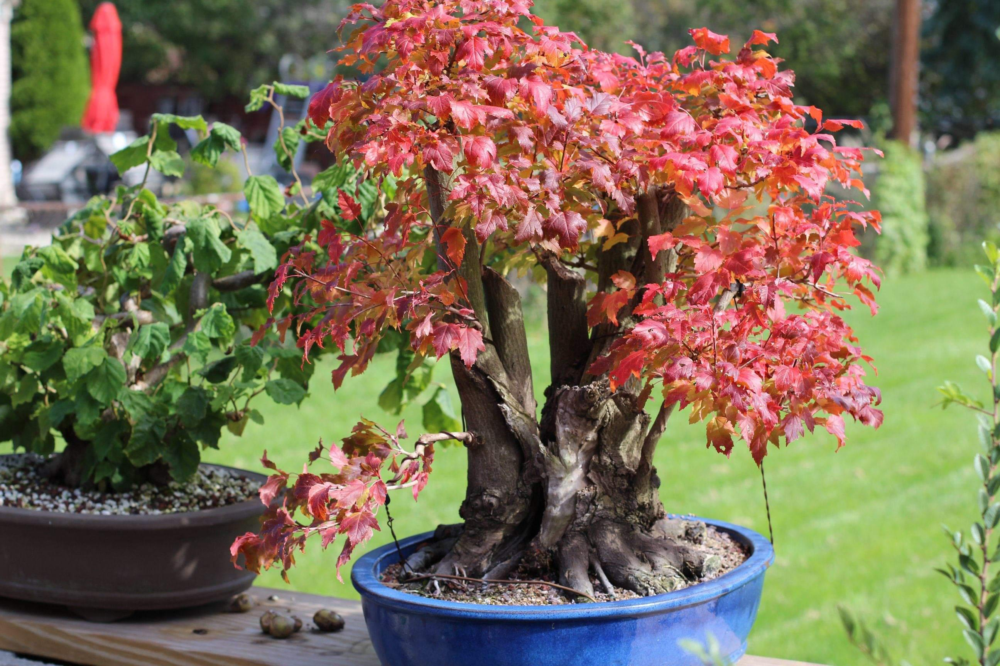
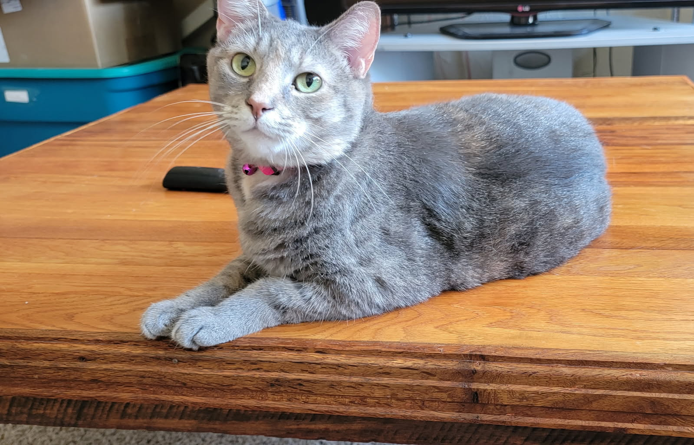
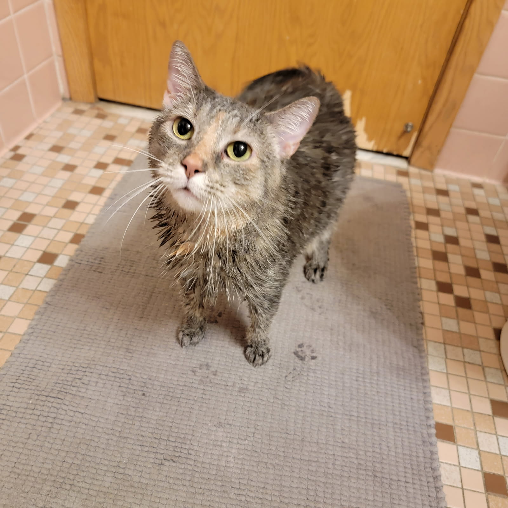
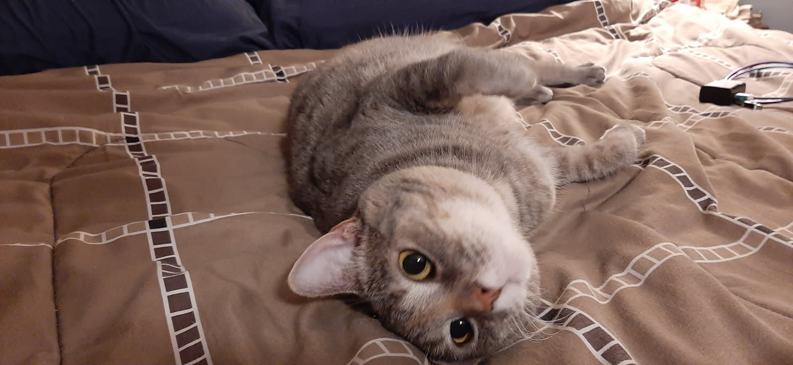
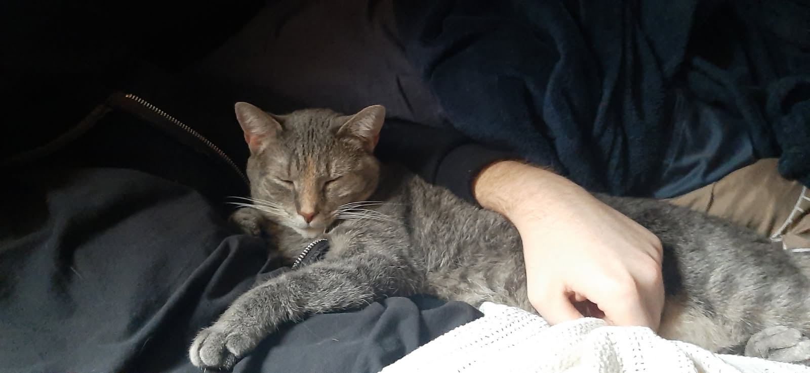
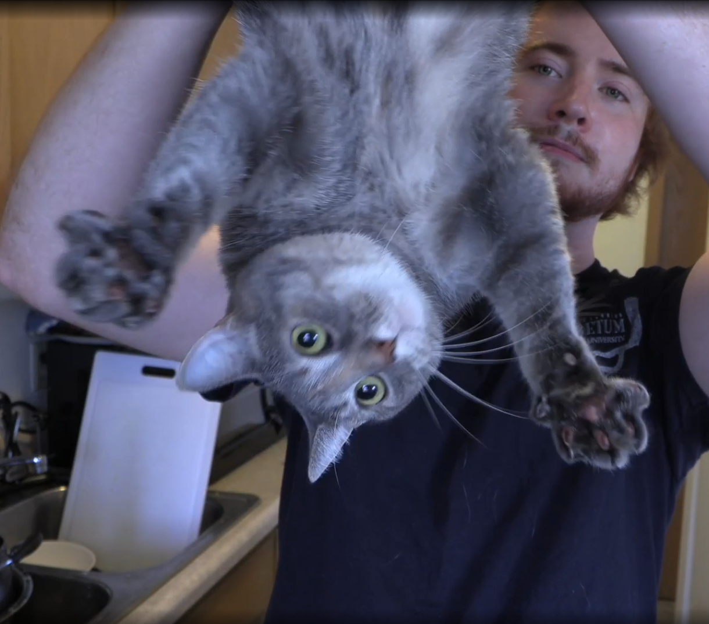
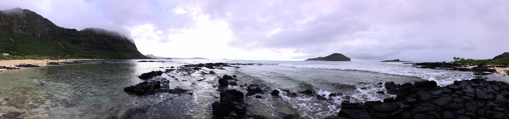
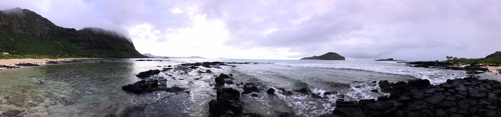
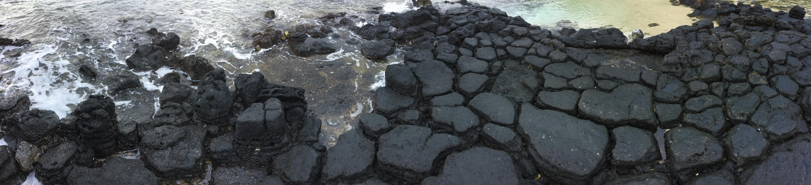
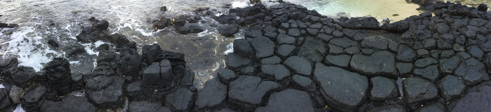

About Me
I believe in viewing people not just for their work, but also the mindset and background that they bring into their actions. That said, I hope you enjoy this bit of insight into my everyday! (Cat tax and fun facts below)
Music
Gardening & Bonsai
When you spend so much time with a face in the books or planted in a chair with eyes staring at a computer monitor, finding a hobby that allows you to get out and enjoy some fresh air is important! Among many others, here are some plants I've had the pleasure of growing!


Deadbolt
I adopted Deadbolt as a kitten from a rescue shelter in October of 2018. I named her after a song by one of my favourite bands, Thrice. Though I had always been a dog person and never before had a pet cat, I knew could take good care of her through my consistent moves around the United States while pursuing my career. Deadbolt is an attention fiend and can never receive enough petting, but was raised to be incredibly chill (loves having her nails trimmed and tolerates taking a bath).
    Getting Outdoors
During my time in Appalachia attending James Madison University I grew a great fondness for the mountains and the outdoors. Below are a couple of stunning pictures I've taken while traveling, hiking, or camping.
 

 
